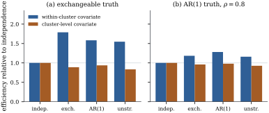

40.5 Working correlation
Theorem 40.4.1 says the working correlation may be wrong without costing consistency. It does not say the choice is free. A wrong one costs efficiency, changes the small-sample behaviour of the sandwich, and — because it changes the estimate — can be turned into a diagnostic for the mean model.
40.5.1. The catalogue
The structures in use are those of Definition 33.4.1,
written as correlation matrices and estimated by moments
rather than by likelihood. For a cluster with
| Structure | Parameters | |
|---|---|---|
| independence | ||
| exchangeable | ||
| first-order autoregressive | ||
| unstructured |
The parameters are estimated by matching averages of
residual products. Writing
The design narrows the list at once. The unstructured
matrix needs a common set of occasions across clusters
and costs
import numpy as np
KINDS = ["independence", "exchangeable", "ar1", "unstructured"]
def correlation(kind, r, p, phi):
"""Moment estimates of the working correlation from Pearson residuals r (m by n)."""
m, n = r.shape
if kind == "independence":
return np.eye(n)
if kind == "exchangeable":
off = (np.sum(r.sum(1) ** 2) - np.sum(r**2)) / 2
a = off / (phi * (m * n * (n - 1) / 2 - p))
return np.eye(n) + a * (1 - np.eye(n))
if kind == "ar1":
a = np.sum(r[:, :-1] * r[:, 1:]) / (phi * (m * (n - 1) - p))
return a ** np.abs(np.arange(n)[:, None] - np.arange(n))
if kind == "unstructured":
R = (r.T @ r) / (phi * m)
return R / np.sqrt(np.outer(np.diag(R), np.diag(R)))
raise ValueError(kind)
def gee(y, X, kind, family="poisson", maxit=100):
m, n, p = X.shape
beta = np.zeros(p)
beta[0] = np.log(max(y.mean(), 1e-3)) if family != "binomial" else 0.0
for _ in range(maxit):
eta = X @ beta
mu = np.exp(eta)
dmu, V = (mu, mu) if family == "poisson" else (mu, mu**2)
r = (y - mu) / np.sqrt(V)
phi = np.sum(r**2) / (m * n - p)
R = correlation(kind, r, p, phi)
Rinv = np.linalg.pinv(R)
SX = (dmu / np.sqrt(V))[..., None] * X
A = np.einsum("mjp,jk,mkq->pq", SX, Rinv, SX)
step = np.linalg.solve(A, np.einsum("mjp,jk,mk->p", SX, Rinv, r))
beta = beta + step
if np.max(np.abs(step)) < 1e-10:
break
u = np.einsum("mjp,jk,mk->mp", SX, Rinv, r)
Ainv = np.linalg.inv(A)
return beta, Ainv @ (u.T @ u) @ Ainv, phi, R40.5.2. Efficiency, and where it comes from
In the setting of Theorem 40.4.1:
(a) Efficiency. The asymptotic covariance
(b) Small samples. The sandwich Eq. 40.4.6 is biased downwards by a term of order
(c) QIC. Since there is no likelihood, AIC is unavailable. Pan’s quasi-likelihood information criterion replaces the log-likelihood by the quasi-likelihood
where
Proof.
- (a) is Exercise (C1); the
covariate-dependence is illustrated in Example (How much efficiency is at stake)
and explained after it. (b) is the cluster version of
the bias calculation in Exercise (C2),
applied to
Remark (Why QIC is weak as a chooser of
correlation). Eq. 40.5.1 measures fit
by a quasi-likelihood that ignores the correlation
altogether, and penalizes by a trace that is smallest
when the sandwich is closest to the model-based
covariance. Changing
Simulate
For the within-cluster covariate
under exchangeable truth, the efficiency of the
exchangeable working correlation relative to
independence is
For the cluster-level covariate the
ranking reverses: under exchangeable truth the relative
efficiencies are

40.5.3. A diagnostic hiding in the efficiency
By Theorem 40.4.1(a), every
working correlation estimates the same
Fit the marginal version of Example (Grunfeld’s firms, again)
— gamma variance function
| Structure | QIC, value and capital | QIC, value only |
|---|---|---|
| independence | 8450.1 | 8657.6 |
| exchangeable | 8524.2 | 8647.4 |
| AR(1) | 8574.1 | 8657.8 |
| unstructured | 8754.7 | 8704.1 |
and prefers independence. As a comparison of
mean models the table is informative: at three
of the four structures the model with capital wins, by
between about
The estimates themselves are the more interesting
output. The independence fit gives
import statsmodels.api as sm
d = sm.datasets.grunfeld.load_pandas().data.sort_values(["firm", "year"])
m, n = d["firm"].nunique(), 20
y = d["invest"].to_numpy().reshape(m, n)
lv = np.log(d["value"].to_numpy()).reshape(m, n)
lc = np.log(d["capital"].to_numpy()).reshape(m, n)
def qic(y, X, kind, phi):
"""Pan's QIC: the quasi-likelihood of the independence model at the fitted mean, plus a
penalty built from the sandwich. For V(mu) = mu^2 the quasi-likelihood is -y/mu - log mu.
The dispersion phi is held fixed across the models compared, as in Mallows's Cp."""
beta, robust, _, _ = gee(y, X, kind, family="gamma")
mu = np.exp(X @ beta)
Q = np.sum(-y / mu - np.log(mu)) / phi
omega = np.einsum("mjp,mjq->pq", X, X) / phi # independence information, log link
return -2 * Q + 2 * np.trace(omega @ robust)
X_full = np.stack([np.ones((m, n)), lv, lc], axis=2)
X_small = np.stack([np.ones((m, n)), lv], axis=2)
phi_ref = gee(y, X_full, "independence", family="gamma")[2] # from the largest model
for name, XX in [("value + capital", X_full), ("value only", X_small)]:
for kind in KINDS:
print(f"{name:16s} {kind:14s} QIC {qic(y, XX, kind, phi_ref):10.2f}")40.5.4. Practical advice
- Count the clusters first.
Everything here that uses a sandwich needs
- Match the structure to the design, not to
the data. Exchangeable for unordered clusters,
autoregressive for equally spaced longitudinal data,
unstructured only when the occasions are common to all
clusters and
- Use independence when the covariates are
time-varying, or the covariate of interest is
cluster-level. In the first case a non-diagonal
- Compare structures to check the mean
model. A large difference between the
independence and exchangeable estimates is a warning
about
- Say which covariance you report, and never put a GEE coefficient and a GLMM coefficient in the same table as if they estimated the same thing. The first costs coverage (Example (Coverage when the working correlation is wrong)); the second is the commonest error in this literature.
Remark (Beyond correlations). For
binary responses a correlation is an awkward measure of
dependence, because the Fréchet bounds on the joint cell
probability confine it to an interval that depends on
the two means, while a pairwise odds ratio is free in
40.5.5. Exercises
A. Check your understanding
For each design, name the working correlation you
would use and say why: (a) pupils within
In Example (Grunfeld’s panel by GEE),
QIC prefers independence among the working correlations
but the AR(1) parameter is estimated at
B. Practice
Show that the exchangeable correlation matrix
Solution.
Formalize the diagnostic of Example (Grunfeld’s panel by GEE).
Let
Solution. Both estimates satisfy Eq. 40.4.5 with the same